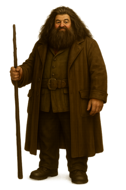

Rubeus Hagrid
Back to Hogwarts Hagrid: “Harry — yer a wizard.”
Harry: “I’m a what?”
Hagrid: “A wizard, o’ course,” said Hagrid, sitting back down on the sofa, which groaned and sank even lower. “An’ a thumpin’ good’un, I’d say, once yeh’ve been trained up a bit. With a mum an’ dad like yours, what else would yeh be? An’ I reckon it’s abou’ time yeh read yer letter.”
Harry: “I’m not a wizard.”
Hagrid: “Not a wizard, eh? Never made things happen when yeh was scared or angry?”
Harry: “But I — I mean — all those times I got in trouble at school for things I couldn’t explain — I suppose —”
Hagrid: “Ah, go on, Harry. You’re a wizard.”
(Harry takes the letter and reads it.)
Harry: “What does it mean, they await my owl?”
Hagrid: “Gallopin’ Gorgons, that reminds me,” said Hagrid, clapping a hand to his forehead with enough force to knock over a cart horse. And from inside his coat he pulled an owl — a real, live, rather ruffled-looking owl — a long quill, and a roll of parchment. With his tongue between his teeth he scribbled a note that Harry could read upside down:
“Hagrid, bring Harry to me as soon as possible. Signed, Albus Dumbledore.”
Hagrid: “Got summat ter do, must get this ter Dumbledore right away … best wizard in the world, Harry. But first — yer parents didn’t die in a car crash!”
Harry: “They didn’t?”
Hagrid: “No, sir. They was murdered. Murdered by a wizard named Voldemort.”
(Harry gasps.)
Hagrid: “You-Know-Who. We call him You-Know-Who cause most wizards don’t like ter say his name. I’m not afraid. Voldemort.”
Harry: “I don’t understand. How could he kill my mum and dad? And why would he want to?”
Hagrid: “It was dark times, Harry, dark times. Voldemort started to gather some folk who were into the Dark Arts, people who’d follow him, people who’d do anything for power. He killed some o’ the best witches and wizards of the age — the McKinnons, the Bones, the Prewetts — and he came after yer mum and dad. And yer mum and dad were as good a witch and wizard as I ever knew. Head Boy and Girl at Hogwarts in their day. But Voldemort killed ‘em. An’ then — an’ this is the real myst’ry of the thing — he tried to kill you too. Wanted ter make a clean job of it, I suppose. Or maybe he just liked killin’. But he couldn’t do it. Never wondered how you got that mark on yer forehead? That was no ordinary cut. That’s what yeh get when a powerful, evil curse touches yeh — took care of yer mum an’ dad an’ yer house, even — but it didn’ work on you, an’ that’s why yer famous, Harry. No one ever lived after he decided ter kill ‘em. No one except you. An’ he’d killed some o’ the best witches and wizards of the age — and you was only a baby, an’ you lived.”
Harry: “But what happened to Voldemort in the end?”
Hagrid: “Some say he died. Codswallop, in my opinion. Dunno if he had enough human left in him to die. Some say he’s still out there, biding his time, like, but I don’t believe it. People who knew him best say he’s gone — disappeared the night he tried to kill you. But what I’m sayin’ is — he’s gone. Even if he’s comin’ back, don’t reckon he’d be strong enough yet. Anyway, yer safe at Hogwarts. As long as Dumbledore’s there, yer safe.”
Personality of Rubeus Hagrid
Introduction
Rubeus Hagrid’s personality is a remarkable blend of strength, gentleness, loyalty, and humility. His towering frame and immense physical power could easily inspire fear, but these are paired with a heart full of warmth and kindness. Hagrid teaches us that true character is not defined by outward appearance or strength alone, but by compassion, honesty, and a deep respect for all living things. His presence is comforting to those who know him, as he radiates trust, protection, and unconditional support. Hagrid’s personality reminds us that goodness can be found in the most unlikely places, and that real strength is measured by how we treat others.
Gentle Strength
Hagrid’s physical strength is unmatched by most, but it is the way he uses that strength that defines him. Despite his size and power, he is tender and careful in his interactions with people and animals alike. His large hands, capable of incredible feats, are often seen gently petting a creature or offering a helping hand to someone in need. Hagrid does not use his strength to intimidate or harm. Instead, he reserves it for acts of kindness, defense, and care. This contrast between his outer might and inner gentleness makes his personality both unique and admirable.
His strength is not only physical. Hagrid shows great emotional strength. He endures difficulties, prejudice, and loss with quiet resilience. His courage is steady, not loud or boastful, and he faces challenges without seeking praise. Hagrid’s strength lies in his dedication to what is right and his refusal to let the hardness of the world change the softness of his heart.
Kindness and Compassion
At the core of Hagrid’s personality is his deep kindness. He sees worth and beauty where others might see danger or unimportance. His kindness is not selective; it is extended to all beings, whether they are human, animal, or magical creature. He has an unshakable belief that everyone and everything deserves a chance to be understood and cared for. Hagrid’s compassion often leads him to form connections with beings that others fear or shun. He has a gift for seeing the goodness that lies beneath the surface, and his heart is always open to those in need of comfort or friendship.
Hagrid’s kindness is matched by his generosity. He gives freely of his time, his resources, and his care. He does not keep score or expect anything in return. His joy comes from helping others, from seeing them safe, happy, and cared for. This generosity is genuine and unforced, a natural expression of who he is.
Loyalty and Devotion
Loyalty is one of the defining traits of Hagrid’s character. His devotion to the people and causes he believes in is complete and unwavering. Once Hagrid gives his loyalty, he gives it fully, without conditions or reservations. This makes him one of the most reliable and steadfast companions one could hope for. He is always willing to stand by those he cares about, even when it puts him at risk or requires personal sacrifice.
Hagrid’s loyalty also extends to ideals of fairness and justice. He is committed to protecting those who are vulnerable or unfairly treated, and he does not abandon his principles in the face of hardship. His sense of duty drives him to take action when he sees wrongs that need to be righted. Whether it is standing up for a misunderstood creature or offering guidance to a struggling friend, Hagrid’s loyalty shines through in all he does.
Humility and Modesty
Despite his considerable abilities and strengths, Hagrid remains humble. He does not seek admiration or applause. His actions are motivated by kindness, not by a desire for recognition. He is happiest working quietly, helping where he can, and celebrating the successes of others rather than his own. This modesty is one of the reasons people feel so comfortable in his presence. Hagrid never tries to make others feel small or unimportant. Instead, he lifts people up, reminding them of their worth and abilities.
His humility also means that Hagrid is deeply self-aware. He knows his strengths, but he is also honest about his flaws and mistakes. He does not try to hide them or pretend to be perfect. This honesty makes him approachable and real, and it allows those around him to see the beauty of his character all the more clearly.
Honesty and Integrity
Hagrid’s honesty is a reflection of his integrity. He speaks the truth, often plainly and directly, without trying to manipulate or deceive. What you see is what you get with Hagrid. He is sincere in his words and actions, and people trust him because of it. His moral compass is strong, and he makes decisions based on what he knows is right, not what is easy or convenient. Hagrid’s integrity means that he does not compromise his values, even when doing so would make his life simpler.
His honesty is also tied to his sense of fairness. He treats everyone with respect and expects to be treated the same in return. He believes in giving people and creatures a fair chance, and he works to create a world where kindness and fairness prevail. Hagrid’s integrity is one of the quiet forces that make him such a powerful presence, even without seeking authority or influence.
Courage and Resilience
Courage is one of Hagrid’s most admirable qualities. His bravery does not come from a desire to impress or dominate, but from his fierce devotion to protecting those he loves. He does not hesitate to put himself in harm’s way if it means safeguarding a friend or defending what he believes in. Hagrid’s courage is steady and dependable. It is the courage of someone who faces danger not for glory, but because his heart tells him it is the right thing to do.
Resilience is also a defining feature of Hagrid’s personality. Life has not always been easy for him, yet he meets each challenge with determination and hope. He does not allow setbacks to harden his spirit or darken his outlook. Instead, he moves forward, holding onto his kindness and joy even in difficult times. This resilience is inspiring, showing that true strength lies not in avoiding hardship, but in remaining true to oneself despite it.
Simplicity and Sincerity
Hagrid’s personality is marked by refreshing simplicity. He does not complicate his life with schemes, lies, or hidden motives. His words and actions come from the heart, and he means what he says. This sincerity makes him a trusted friend and confidant. People feel safe confiding in Hagrid because they know he will listen without judgment and offer honest support. His simple approach to life allows him to focus on what matters most: kindness, loyalty, and doing good.
His sincerity also brings lightness to those around him. Hagrid has a genuine sense of wonder and delight in the world. His joy at the small beauties of life—whether in nature, animals, or friendship—reminds others to appreciate the good that surrounds them. His sincere enthusiasm is infectious, lifting the spirits of those lucky enough to share his company.
Protectiveness and Nurturing Spirit
Hagrid is deeply protective of those he loves, as well as the creatures in his care. His protectiveness stems not from a need for control, but from his instinct to shield others from harm. He feels a great responsibility to look after people, animals, and the world around him. His nurturing spirit makes him a source of safety and comfort. Those who know him understand that he will always stand between them and danger, no matter the cost.
Hagrid’s protective nature also extends to emotional well-being. He is always ready to offer a kind word, a listening ear, or a helping hand. He looks out not only for people’s physical safety but also for their hearts. His nurturing presence helps others feel seen, valued, and cared for.
Conclusion
Rubeus Hagrid’s personality is a testament to the idea that true greatness is measured by the goodness of one’s heart. His strength is matched by gentleness, his courage by compassion, and his loyalty by humility. Hagrid lives his life guided by kindness, fairness, and honesty, and he inspires those around him to do the same. His presence reminds us that the most powerful force in the world is not magic, strength, or intellect—but love, loyalty, and integrity. Hagrid’s character shows that in a world of challenges, the truest heroes are those who choose to meet others with warmth and open-heartedness.
Back to Top